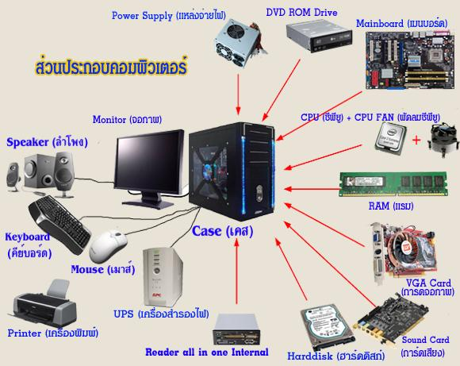

คอมพิวเตอร์คืออะไร?
คอมพิวเตอร์ คือ อุปกรณ์ทางอิเล็กทรอนิกส์ (electronic device) ที่มนุษย์ใช้เป็นเครื่องมือช่วยในการจัดการข้อมูลที่อาจเป็น ทั้งตัวเลข ตัวอักษร หรือสัญลักษณ์ที่ใช้แทนความหมายในสิ่งต่าง ๆ โดยคุณสมบัติของคอมพิวเตอร์คือการที่สามารถกำหนดชุดคำสั่งล่วงหน้า หรือโปรแกรมได้
องค์ประกอบหลักของคอมพิวเตอร์
🖥️ Monitor (จอภาพ)
⌨️ Keyboard (คีย์บอร์ด)
🖱️ Mouse (เมาส์)
🔊 Speaker (ลำโพง)
🖨️ Printer (เครื่องพิมพ์)
🔋 UPS (เครื่องสำรองไฟ)
🖥️ Case (เคส)
⚡ Power Supply (พาวเวอร์ซัพพลาย)
“หัวใจไฟฟ้า” ของเครื่อง
🧠 Mainboard / Motherboard (เมนบอร์ด)
🧠 CPU (ซีพียู)
ยิ่งแรงเครื่องยิ่งเร็ว
🌪️ CPU FAN (พัดลมซีพียู)
🟩 RAM (แรม)
💾 Harddisk / HDD
ปัจจุบันนิยม SSD มากกว่าเพราะเร็วกว่า
🎮 VGA Card / Graphics Card (การ์ดจอ)
ยิ่งแรง: FPS เกมยิ่งสูง
🔈 Sound Card (การ์ดเสียง)
💿 DVD ROM Drive
📥 Reader All in One

ที่มา: หลักการทำงานและวิธีเลือกใช้คอมพิวเตอร์

ที่มา: หลักการทำงานของคอมพิวเตอร์

ที่มา: อุปกรณ์คอมพิวเตอร์
ประโยชน์ของคอมพิวเตอร์

- ช่วยในการศึกษาและค้นคว้าข้อมูล
- เพิ่มประสิทธิภาพในการทำงาน
- ใช้ติดต่อสื่อสารผ่านอินเทอร์เน็ต
- สร้างสื่อและความบันเทิง
- รองรับการพัฒนาเทคโนโลยีและนวัตกรรม